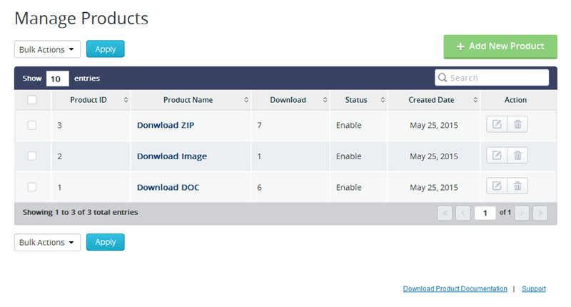
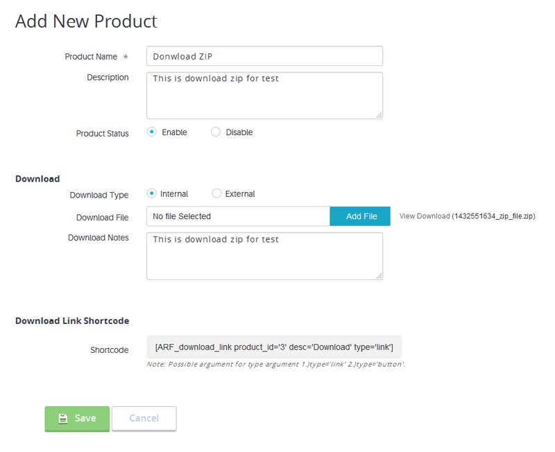
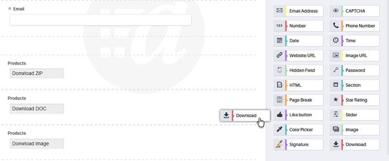
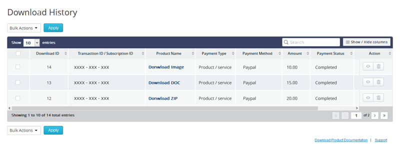

Digital Download With ARForms plugin allows you to quickly download Digital Products after form submission of ARForms. User can securely download digital products after successfull payment with Payment addons of ARForms.
ARForms Digital Download plugin integrates your digital products to be download in a single process with ARForms. You can download digital product after successful transaction by other payment gateway addon of ARForms. After download products you can view list of download history.
This addon requires at least version 2.7.3 of ARForms. Please make sure that your ARForms plugin is up to date before installing this extension.
You can install plugin either of these two methods.
1) New install via FTP
a. Download the plugin from CodeCanyon, and extract it. You should find a directory arformsdigitalproduct.
b. In your WordPress installation, upload arformsdigitalproduct to wp-content/plugins/
c. Activate the "Digital Download With ARForms" plugin through the Plugins menu from WordPress admin panel.
2) New install via the WordPress Uploader
a. Download the plugin from CodeCanyon
b. Log in to your WordPress admin panel
c. go to Plugins -> Add New -> Upload
d. Click on choose file and browse the download package from CodeCanyon. When the plugin uploads successfully, click on Activate Plugin link.
After activating the plugin, you will be able to see "Manage Products" & "Download History" links under “ARForms” menu in admin menu list and new "Download" field under Advanced Form Elements list in "ARForms".

Using this add-on, you can allow user to download digital product using ARForms.
You can get product list along with Total sales, product status etc.
You can edit existing product details by clicking on “Edit Product” icon. If you want to delete any product, just click on “Delete” icon.
If you want to add digital product to be download with ARForms, Click on 'Manage Products'. You can add new product by clicking on “Add New Product” button from top right corner.
Add Product Name, Description and Product Status and product's download details.
For download detail, select Download Type like it is Internal or External. If you have already product then select 'Internal' option. When you select 'Internal' option,you have to select location of your digital product to be download.
If you want allow users to download digital product from any third party then, select 'External' option. When you select 'External' option, you have to add download URL.
Now just click on 'Save' button to add your product.
After saving the product, you will get a shortcode which you need to place where you want to allow users to download that particular product.

After successfully added product, you have to just map with your ARForms' form. You can add download field to ARForms form just like other arform fields of ARForms.
To add download field to your ARForm's form, just drag the field from "Advanced Form Elements" panel and drop into your form.
Select the product which you have already added from "Manage Products" section. Selected product will be downloaded after form submission.
If you want to change settings of download field, click on Setting button. From here, you can set whether attach downloaded file with email or not.
You can manage expiration time for download link. Here you will get shortcode for download product by user. You will be able to set whether it should be Link or as Button for download product.
This field will not display in front-end of your site. This field will just allow users to download product after successful form submission.

When form submitted successfully, user can get download link of product. You can also attach downloaded file with notification to site administrator after successful form submission.
With Digital Product Download addon, you can view history of all downloaded products with its details, You can track Payment details along with product downloaded.
